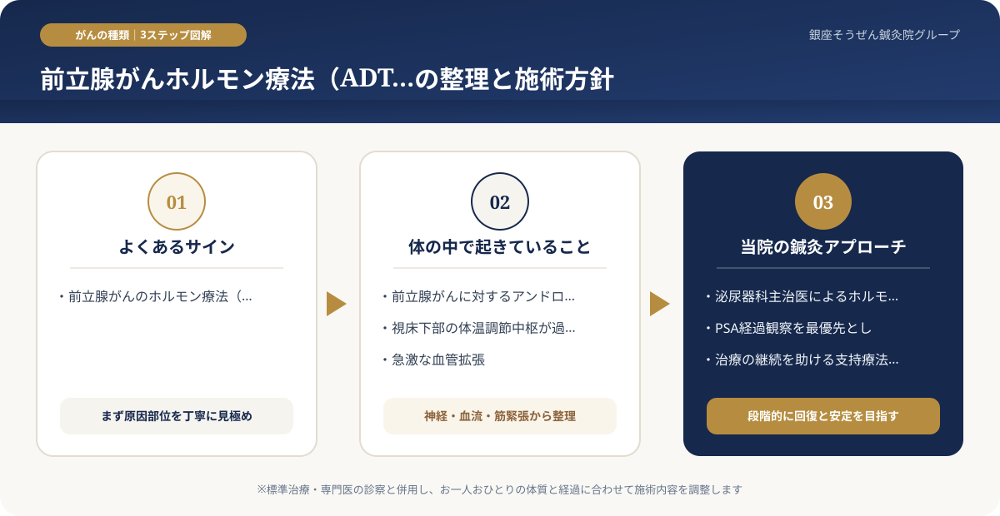
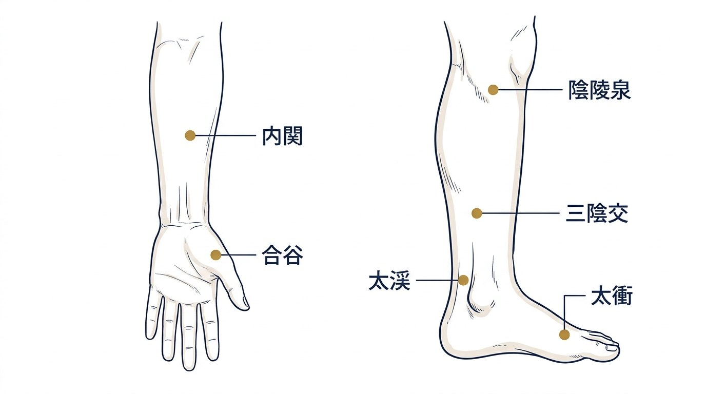

前立腺がんホルモン療法（ADT）に伴うホットフラッシュの鍼灸
前立腺がんのホルモン療法（ADT）に伴う突然のほてりや発汗・夜間覚醒に対し、治療継続を支える非薬物の補助鍼灸ケア。
まず知っておきたい要点と改善の流れ

前立腺がんに対するアンドロゲン遮断療法（ADT）によりテストステロン値が急低下すると、視床下部の体温調節中枢が過敏になり、急激な血管拡張・ほてり・発汗（ホットフラッシュ）が生じます。スウェーデンの泌尿器科3施設で実施されたEuropean Urology掲載のランダム化比較試験（31名）では、週1回・12週間の電気鍼および伝統的鍼治療により、24時間あたりのほてり回数と苦痛度が有意に低下（ホットフラッシュスコア78%および73%減少）し、効果は終了後も最長9か月持続、副作用は軽微であったと報告されています（出典: https://pubmed.ncbi.nlm.nih.gov/18294761/）。（出典文献）
このようなお悩みはありませんか？
- ✓前立腺がんのホルモン療法（ADT）を始めてから、急なほてりや大汗がつらい ・夜中にほてりと寝汗で目が覚め、睡眠不足や日中のだるさが続いている ・ほてり対策の薬を増やすことに抵抗があり、副作用の少ないケアを探している ・ホルモン療法を無理なく継続するために、自律神経の波を穏やかにしたい
当院の施術アプローチ・改善の流れ
なぜ鍼灸で改善へ向かうのか？（作用機序の図解）
前立腺がんホルモン療法（ADT）に伴うホットフラッシュに対する鍼灸は、迷走神経抗炎症反射と標準治療を支える支持療法機序を通じて、お体本来の回復力を引き出します。

手術創・リンパ節郭清側・患部を厳格に避け、内関・足三里・合谷など安全な経穴を刺激します。
内因性鎮痛系や延髄嘔吐中枢の抑制経路へ働きかけ、痛み・吐き気・しびれの軽減を助けます。
治療に伴う炎症性サイトカイン反応や過覚醒を穏やかに整え、倦怠感や不眠の負担を和らげます。
主治医の治療計画を最優先に、体力と生活の質を保ちながら治療を続けられる環境を支えます。
院長YouTube解説・関連動画
ホルモン療法ホットフラッシュ・関節痛の全身ツボ図解
実際の施術ではお一人おひとりの体質・症状に合わせて選穴しますが、乳がん・前立腺がんホルモン療法に伴うほてり・関節痛サポートの臨床でよく用いられる代表的なツボの目安です。

📌 代表的なツボの詳細一覧表を開く（6穴） ▼
| ツボ名 | 位置の目安 | 主な狙い | セルフケアの注意点 |
|---|---|---|---|
| 内関（ないかん） | 手首の横ジワから指3本分肘寄りの中央 | 急なほてり・発汗に伴う動悸と不安感の鎮静 | 乳がん術側の腕（リンパ浮腫リスク側）は避けて健側を使います。 |
| 合谷（ごうこく） | 手の甲、親指と人差し指の間 | アロマターゼ阻害薬誘発性関節痛（AIA）の鎮痛補助 | 手首や指のこわばりにも穏やかに作用します。 |
| 陰陵泉（いんりょうせん） | すねの内側、膝下のくぼみ | 関節のむくみ・重だるさ・水分代謝の調整 | ホルモン治療の継続を支える非薬物ケアとして行います。 |
| 三陰交（さんいんこう） | 内くるぶしの上から指4本分上 | 体温調節中枢の過敏鎮静・夜間覚醒の軽減 | 週1〜2回の継続でほてりの波が穏やかになりやすいツボです。 |
| 太渓（たいけい） | 内くるぶしとアキレス腱の間 | ほてりと足元の冷え（上熱下寒）のバランス調整 | 寝汗やのぼせが強い方におすすめのツボです。 |
| 太衝（たいしょう） | 足の甲、親指と人差し指の骨の間 | 自律神経の急上昇（ホットフラッシュ発作）の抑制 | 深呼吸しながら3〜5秒ずつ優しく押します。 |
国際査読論文の科学的エビデンス
国際的な医学データベース（PubMed・Cochrane等）で報告されている乳がん・前立腺がんホルモン療法に伴うほてり・関節痛サポート領域の代表的な査読済み鍼灸研究をまとめています（標準治療との併用や研究上の限界を含めて正確に掲載）。
📚 査読論文データ・PubMed出典リンクを開く（4件） ▼
| 年・研究デザイン | 対象・規模 | 主な結果 | 限界・出典 |
|---|---|---|---|
| 2022年 国際診療ガイドライン | SIO-ASCO合同ガイドライン（227文献レビュー） | アロマターゼ阻害薬関節痛への鍼を推奨、一般的がん疼痛・筋骨格痛への鍼・指圧を推奨選択肢と明記（中等度）。 | がん自体を治す治療ではなく標準治療と併用する支持療法。 J Clin Oncol (PMID: 36122322) |
| 2020年 メタ解析 | がん関連疼痛 17 RCTs（n=1,111） | 偽鍼比で疼痛低減（MD -1.38）、鎮痛薬併用で疼痛低減（MD -1.44）およびオピオイド使用量減少（-30mg/日）。 | 異質性高くGRADE中等度。オピオイド調整は必ず主治医判断。 JAMA Oncol (PMID: 31855257) |
| 2020年 3群パイロットRCT | 化学療法誘発性末梢神経障害（CIPN）75名登録 | 通常ケア比で8週時の疼痛（p=0.05）・ピリピリ感（p=0.02）・しびれ（p=0.005）が有意改善、12週も持続。 | 単施設小規模パイロット試験。大規模検証が必要。 JAMA Netw Open (PMID: 32159808) |
| 2023年 メタ解析 | 化学療法誘発性悪心嘔吐（CINV）38 RCTs（n=2,503） | 通常制吐ケアへの併用で急性嘔吐（RR 1.13）・遅発性嘔吐（RR 1.47）の完全制御率が向上。 | GRADE低〜非常に低。標準制吐薬の上乗せ療法が前提。 Cancer Med (PMID: 37226372) |
参考文献・出典
- 一次論文・公的出典：前立腺がんホルモン療法（ADT）に伴うホットフラッシュの根拠文献
- 2022年 国際診療ガイドライン（SIO-ASCO合同ガイドライン（227文献レビュー））— J Clin Oncol (PMID: 36122322)
- 2020年 メタ解析（がん関連疼痛 17 RCTs（n=1,111））— JAMA Oncol (PMID: 31855257)
- 2020年 3群パイロットRCT（化学療法誘発性末梢神経障害（CIPN）75名登録）— JAMA Netw Open (PMID: 32159808)
- 2023年 メタ解析（化学療法誘発性悪心嘔吐（CINV）38 RCTs（n=2,503））— Cancer Med (PMID: 37226372)
よくある質問（FAQ）
Q. ホルモン療法の効果を邪魔することはありませんか？▼
あわせて読まれる関連疾患（がんの種類）
男性ホルモンが関与する前立腺のがんです。泌尿器科の標準治療を最優先に、主治医許可のもと副作用や術後の心身負担を和らげる支持療法を行います。
耳の穴から鼓膜までの外耳道に生じる極めて希少な悪性腫瘍です。専門医の標準治療を最優先とし、主治医許可のもと副作用の緩和を支えます。
口腔がんの約6割を占め、舌の縁に多く発生する悪性腫瘍です。専門医の標準治療を最優先とし、主治医許可のもと副作用の緩和を支えます。
耳の前下にあり顔面神経が通る耳下腺に発生する希少ながんです。専門医の標準治療を最優先とし、主治医許可のもとQOL向上を支えます。
鼻の奥の上咽頭に生じ、早期に頸部リンパ節転移を起こしやすいがんです。専門医の標準治療を最優先に、主治医許可のもとQOLを支えます。
頬骨の奥にある上顎洞の粘膜から発生する副鼻腔がんです。専門医の標準治療を最優先とし、主治医許可のもとで副作用緩和を支えます。
CLINICAL RECOVERY CASES
✨ 実際の臨床改善事例・回復経過を見る
銀座本院をはじめ各院での実際の改善事例を症状別に絞り込んでご確認いただけます。
おひとりで悩まず、まずはご相談ください
銀座本院・川口・大宮・横浜・博多・田無の各院でご予約を承っております。